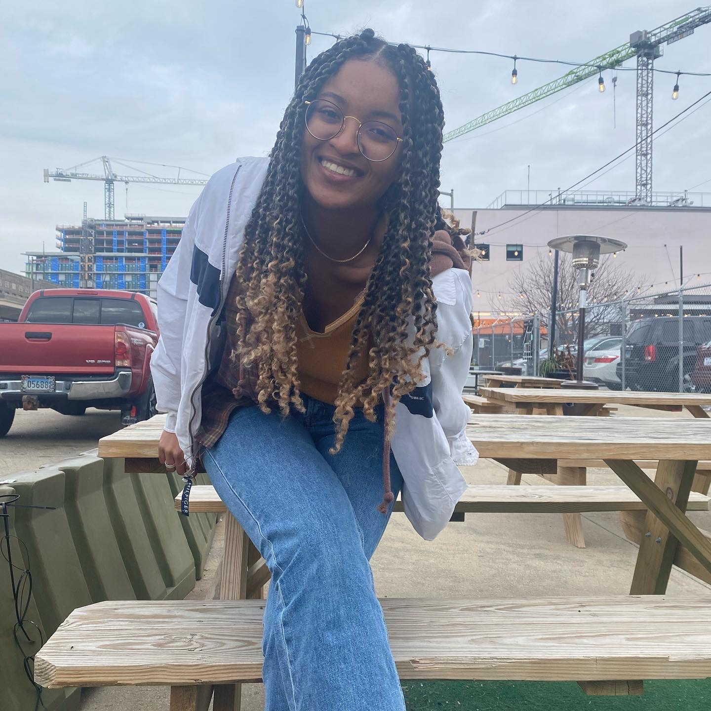

Auzinea is a sophomore double majoring in journalism and government & politics at the University of
Maryland. She is mostly interested in print media, especially regarding environmental journalism and
international politics. During her time at the university, she has been a weather reporter for the
campus radio station, a staff writer and editor at the Black Explosion, and environment and health
reporter at the Diamondback. She worked as an orientation advisor for the university, is a Merrill
College correspondent, and was on the Black Student Union’s marketing committee. She hopes to write
as a foreign correspondent for a news publication one day.